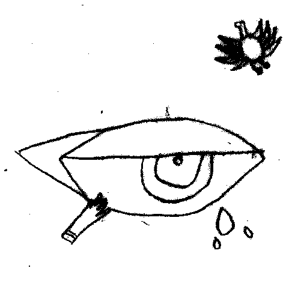

*__menu
En Vivo, El Principe Idiota.
Me sente en el medio, en un cumple. No castigarse. La mayor tranquilidad posible es el clima ideal. Amigos, sol y familia. Una especie de saludo musical. Fiestitas de 15 personas. El presente puro. Soltar.
El chow de mi vida. Tan bisagra como el de Nicholas Allbrook en 2014, Cc. Matienzo.
Pero no era un chow, era un podcast. Julia vs. Monstruos. Julia habia cantado primero. Pistas de saxo como las de Kaitlyn Aurelia Smith. Letras de secretos y serpientes. Un experimento.
Se sentaron a hablar. La vida cotidiana. Pescando frases. –Cuanta musica hay en vos–. Sufría de ansiedad social. Estaba esperando unos diarios para leer. Diario de dinero, diario de dispersión (Rosario Bléfari) y otro mas. Le gustaba escribir y preservarlo para ver que pasa dentro de diez años. Después de ablandarse al sol todo se transforma en canción.
Había tocado en cemento, 2 minutos y otra banda mas. Había tenido rastas magenta. Todos en Mendoza tenían algo que decir de sus rastas. Eso le molestaba. Nada como la indiferencia.
Estábamos sentados en el pulmón de casa del árbol. Bajo las lucecitas eramos pocos y los últimos. En frente una fila larga de mesas. Era noche de collage. Tomando un vino con Teito. El teléfono me tenia de hijo. Me había perseguido pero ya esta. Todo tenia que tener un objetivo, pero ya esta.
A construir
una casa
con una linda cocina
que no este podrida
con un poco de algodon y cinta
